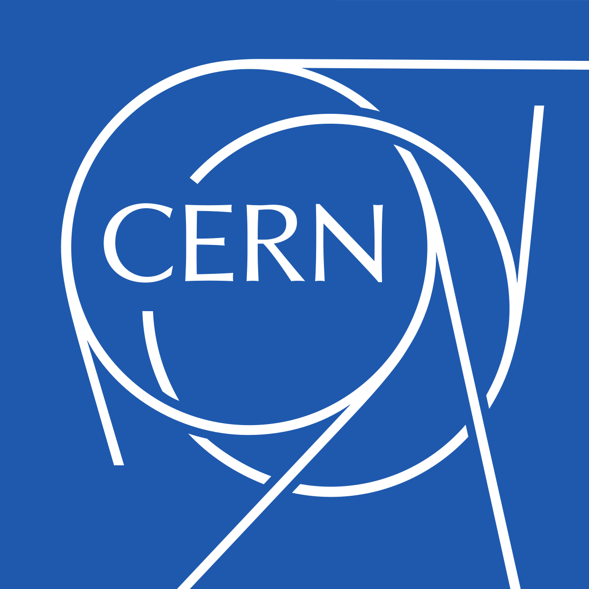

Cern is the webpage that stores the first ever website. While this website is simple it is the starting place of HTML and the World Wide Web, the creations of Tim Berners-Lee. The first link provided is a hyperlink to the first website ever built. This was created 1989 at the CERN research center in Switzerland. At first look I didn't recognize something in the code. The Description List element, this html code gives you a look of an unordered list with descriptions. Who knew I would learn something from the first website ever built. This Description List contains information about what the World Wide Web (W3) is. This Description List also holds links to other HTML documents using href. There isn't much to this website and I certainly wouldn't consider it modern and clean. Above you can see what the website would've first looked like. No style sheets that's for sure. Other places to go from the main webpage include a simulation of what the first website would've looked like using a line-mode browser. I do recommend checking this out! The next two links take you to CERN's website giving more information about this project!